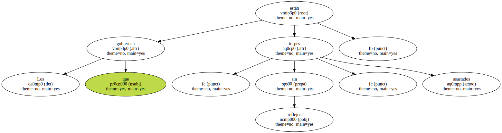
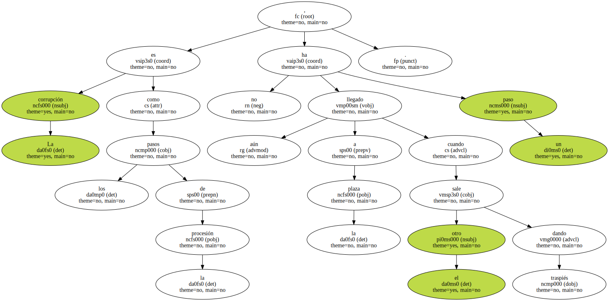
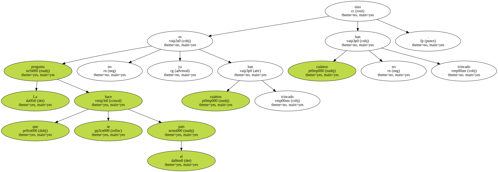
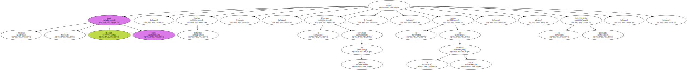
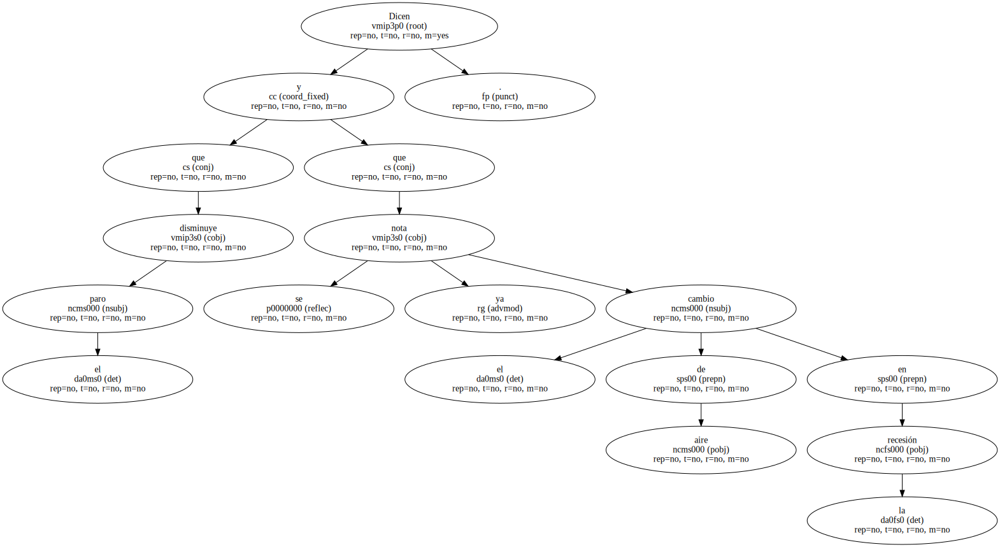
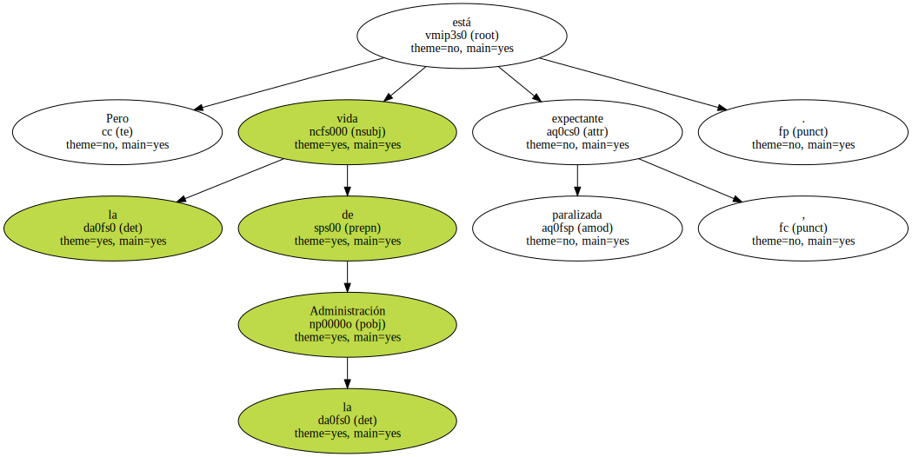
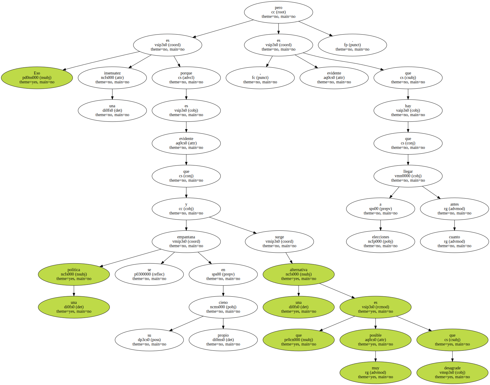
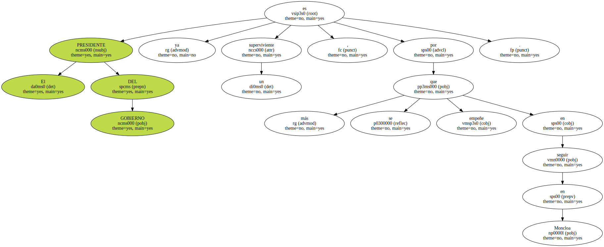
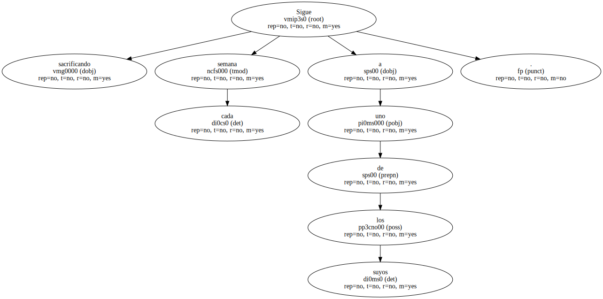
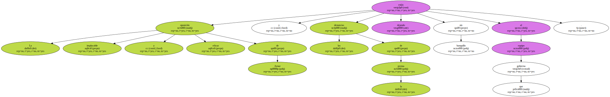

Los que gobiernan están torpes , sin reflejos , asustados.
La corrupción es como los pasos de la procesión , aún no ha llegado a la plaza un paso cuando sale el otro dando traspiés.
La pregunta que se hace el país no es ya cuántos han trincado sino cuántos no han trincado.
Mientras , Roldán sigue huido ; Interior , desbaratado ; el Congreso , convertido en asamblea ; la prensa , con el escándalo diario , y la Administración , paralizada.
Dicen que disminuye el paro y que se nota ya el cambio de aire en la recesión.
Pero la vida de la Administración está paralizada , expectante.
Hay gente que cree que así puede no sólo aguantar hasta el verano sino cuatro años más.

Eso es una insensatez porque es evidente que una política se empantana en su propio cieno y surge una alternativa que es muy posible que desagrade , pero es evidente que hay que llegar a elecciones cuanto antes.
El PRESIDENTE DEL GOBIERNO ya es un superviviente , por más que se empeñe en seguir en Moncloa.
Sigue sacrificando cada semana a uno de los suyos.
La implacable y eficaz oposición de Aznar y las denuncias de la prensa están dejando sin banquillo al equipo que gobierna.
